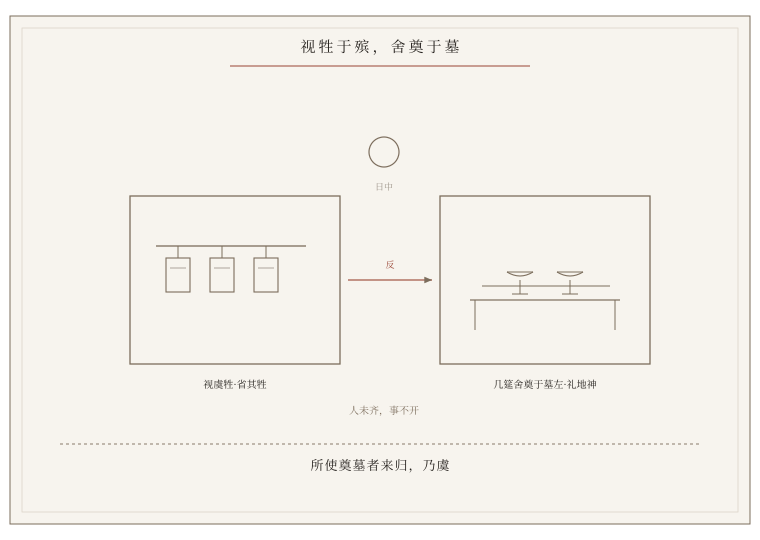

檀弓下 · 四·二十九 · 第 354 课
既反哭，主人与有司视虞牲。有司以几筵舍奠于墓左，反，日中而虞。
说什么事：反哭之后，主人同有司查验虞祭所用的牲；另有有司携几、筵与祭馔，置奠于墓左，等他们回来，日中方行虞祭。
落在哪一层：以「时」量礼。论礼不肯抢在事实之前——人不齐，事不开。
为何编在此位：上节封土而赠、祝先归宿虞尸，此节接言虞前之备。由「人备」到「物备」，由「宿」到「视」，再到「反」而后行。
【经】既反哭，主人與有司視虞牲。有司以几筵舍奠於墓左，反，日中而虞。
【注】日中将虞，省其牲。／所使奠墓有司来归乃虞也。舍奠墓左，为父母形体在此，礼其神也。《周礼·冢人》：「凡祭墓为尸。」
【疏】此谓既窆之后事也。有司，修虞之有司也。几，依神也。筵，坐神席也。席敷陈曰筵。舍，释也。奠，置也。／墓道向南，以东为左，孝子先反修虞，故有司以几筵及祭馔置于墓左，礼地神也。言以父母形体所托，故礼其地神以安之也。／「反，日中而虞」者，「反」谓所使奠墓左有司归也。「虞」者，葬日还殡宫安神之祭名。必用日中者，是日时之正也。《士虞礼》云：「日中而行事。」注云：「朝葬，日中而虞。君子举事必用辰正也。再虞、三虞皆用质明。」／案周人尚赤，大事用日出，故朝葬也。
反哭 葬毕返哭于庙、于寝。
视 查验。非「看见」，是「省视」。
虞牲 虞祭所用之牲。虞祭在葬日当日，故牲须先省。
几 依神之具。神无所凭，故以几依之。
筵 坐神之席。疏云「席敷陈曰筵」。
舍奠 舍，释也；奠，置也。释置而不迎，与正祭之「荐」有别。
墓左 墓道向南，以东为左。
反 所使奠墓之有司返归，非主人反。
日中 正午。疏云「日时之正」。
反哭之后，主人与有司一同查验虞祭所用的牲。另有有司带着几、筵与祭馔，到墓的东边置奠以礼地神；等他们回来，日正当中，才行虞祭。
此章一句之内有两班人、两处所、两个时。
主人在殡宫视牲，有司在墓左舍奠；一班为「将祭之神」备物，一班为「已藏之形」礼地。
而「反，日中而虞」五字，把两班人重新收在一处：人未齐，事不开。
第一层 视虞牲：祭先备物 虞祭就在葬日当天，须先省牲。
省牲不是例行公事。牲有肥瘠、有纯驳、有可用不可用；若不省而祭，则祭之诚先亏一半。
礼之严，常严在「事前」而非「事中」：事中出错，尚可补；事前不省，无可补。
第二层 舍奠墓左：为形礼地 疏点得极准：「以父母形体所托，故礼其地神以安之。」
这一段土，从此是父母形体所在。礼不拜土，礼的是「此地受此形」这件事。
故奠于墓左，不是给死者另设一席，而是替死者谢这块地。今日之「安葬」，义亦在此。
第三层 反，日中而虞：人齐才开事 注云「所使奠墓有司来归乃虞也」。
郑恐人以为「日中」到点就行祭，故特为注明：要等奠墓的人回来。
此一句见礼的秩序：不是钟点决定开事，是人到齐决定开事；而钟点只是不使人拖。
第四层 必用日中：辰正 疏云「必用日中者，是日时之正」，「君子举事必用辰正」。
朝葬用日出，因周人尚赤、大事用日出；虞用日中，取日之正中。二次三虞则用质明。
同一日之内，三个时辰各有所取：葬取始，虞取正，再虞三虞取明。礼之于时，不是迷信，是给每一件事一个「恰好的位置」。
第五层 今日之用：等一个人回来 今人办事，多按日程表推进，人不齐亦开；事后才发现缺一环，返工更费。
此节所示：把「等人」写进程序里。奠墓的人不回，虞不开；宁可等，不可抢。
丧家最易乱，乱在抢时辰、抢人。此一节教人「人等齐，事才起」。
与今日何干 今之葬礼，仪节多而预备少。此节提示：凡有祭有奠，先省其物、先定其人、先约其时，而后行礼。三者不备，宁缓半日。
| 左 | 右 |
|---|---|
| 既反哭 | 葬毕返哭 |
| 视虞牲 | 省其牲 |
| 几 | 依神 |
| 筵 | 坐神之席 |
| 舍奠 | 释置而不迎 |
| 墓左 | 墓道南向，东为左 |
| 礼地神 | 为形体所托 |
| 反 | 奠墓者有司归 |
| 日中而虞 | 辰正 |
画一处新封的墓地，视点略高俯视。画面右侧是一座方正的坟丘，坟前有墓碑式的一块立石。画面左侧偏下，置一小几、一领摊开的席，席上摆两件陶制祭器（一豆一鼎，形制简朴）。几席与坟丘之间不画连线，只留空地。画面最上方偏右画一轮正中的太阳，圆而小，不作光芒。赭色只用在小几的一条横撑上。
